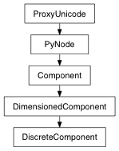

Components whose dimensions are discretely indexed.
Ie, there are a finite number of possible components, referenced by integer indices.
Example: polyCube.vtx[38], f.cv[3][2]
Derived classes should implement: _dimLength
Returns the component indices for the current item in this component group
If the component type has more then one dimension, the return result will be a ComponentIndex object which is a sub-class of tuple; otherwise, it will be a single int.
These values correspond to the indices that you would use when selecting components in mel - ie, vtx[5], cv[3][2]
Returns the current ‘flat list’ index for this group of components - ie, if this component holds the vertices:
[5, 7, 12, 13, 14, 25]
then if the ‘flat list’ index is 2, then we are pointing to vertex 12.
A list of all the indices contained by this component.
An iterator over all the indices contained by this component, as ComponentIndex objects (which are a subclass of tuple).
The maximum possible number of components
ie, for a polygon cube, the totalSize for verts would be 8, for edges would be 12, and for faces would be 6